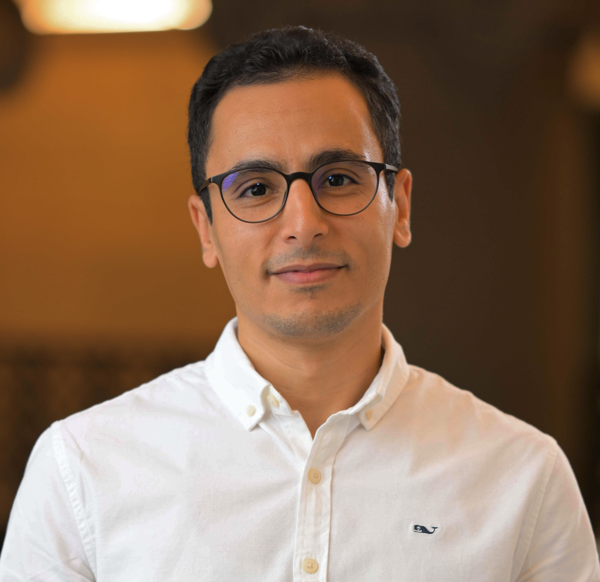

Seed Technology
Biomaterials
Advanced Seed Technology
Developing biomaterial-based seed coatings and delivery systems to control the seed microenvironment and support beneficial plant–microbe interactions.
I work at the intersection of microbial engineering, plant science, and biomaterials to develop innovative solutions for crop resilience and sustainable agriculture.

I am a Postdoctoral Associate at MIT, working at the intersection of microbiology, synthetic biology, biomaterials, and plant science.
My research focuses on engineering beneficial microorganisms and developing biomaterial-based delivery systems to improve plant performance and crop stress resilience.
My background spans microbial biotechnology, genetic engineering, plant–microbe interactions, microbial encapsulation, and bioactive natural products. I am interested in translating advances in microbiology and materials science into practical solutions for sustainable agriculture and food security.
Developing biological technologies that help beneficial microorganisms survive, reach their target environments, and contribute to more resilient agricultural systems.
Exploring how microbial engineering and biomaterials can work together to improve plant health and agricultural sustainability.
Developing biomaterial-based seed coatings and delivery systems to control the seed microenvironment and support beneficial plant–microbe interactions.

Engineering plant-associated bacteria to develop biological strategies that support plant growth and resilience under environmental stress.

Investigating beneficial microorganisms, plant responses, and bioactive compounds that contribute to plant health and adaptation to environmental challenges.
Working on advanced seed technologies, microbial engineering, and biomaterial-based delivery systems to improve plant performance and crop resilience.
Investigated plant bioactive metabolites and natural extracts for the development of sustainable crop biostimulants and bioprotection strategies.
Project: Engineering thermo-responsive plant growth-promoting bacteria to induce pre-emptive stomatal cooling in crops.
Principal Investigator: Prof. Benedetto Marelli
Dissertation: Exploring the quinoa-associated microbiome and its role in plant growth, health, and resilience.
Presentation: Biopolymer-Microparticle Composite Seed Coatings Deliver Rhizobacteria to Enhance Crop Drought Resilience
Interested in research collaboration, scientific exchange, or agritech innovation? I would be happy to connect.